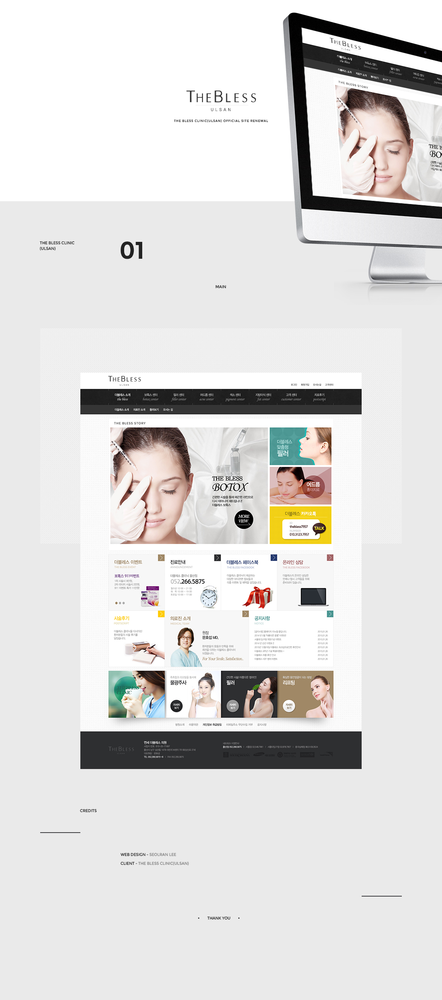

- The Bless Clinic(Ulsan) Official Site Renewal
- 클라이언트가 다채로우면서도 성형외과의 특징 상 신뢰감이 느껴지는 홈페이지를 원하셨기 때문에, 색 조합은 vivid하게 가되, 헤더와 풋터쪽을 무게감 있는 검은 계열의 색을 선택해 홈페이지 전체의 균형을 잡아주는 역할을 하게 하였다.
-
Concept:Vivid, Diversity
Date:2015
Color:blackwhitelightgray
Skills:Phostoshop
-
Client:The Bless Clinic(Ulsan)
My role:Concept, Design
- 